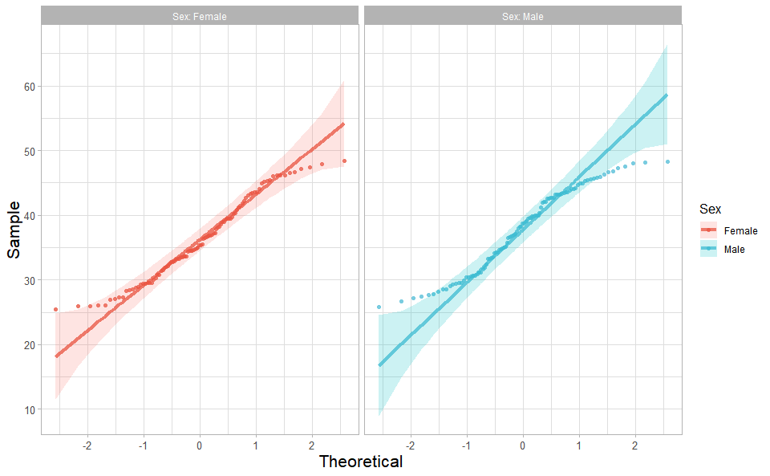
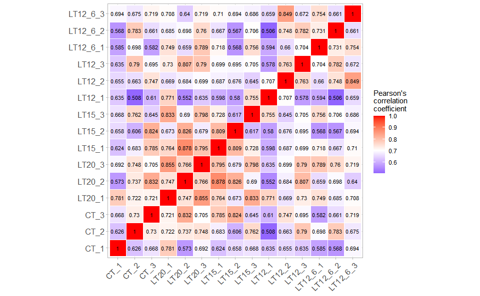
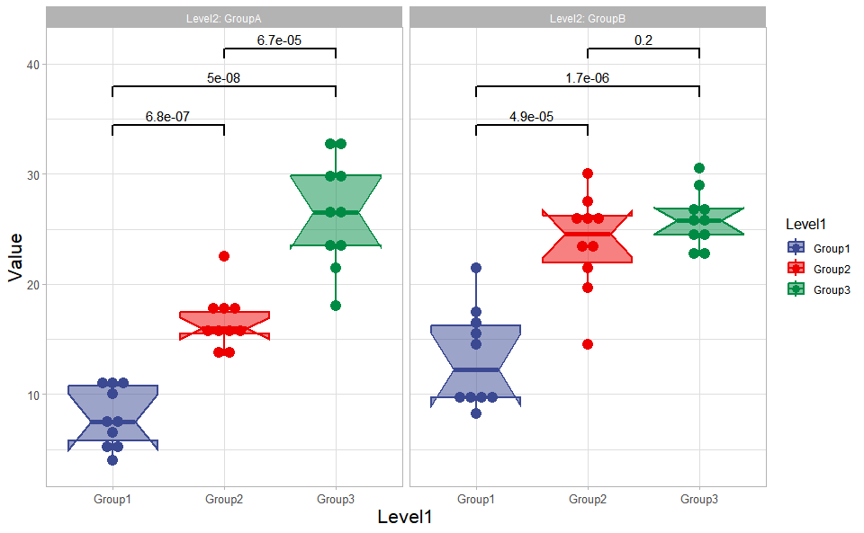
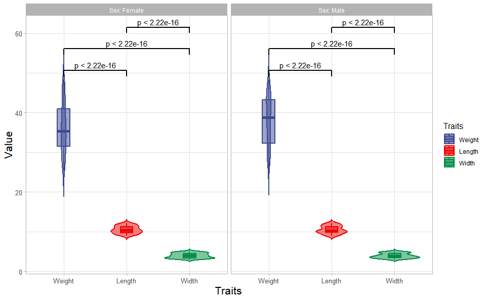
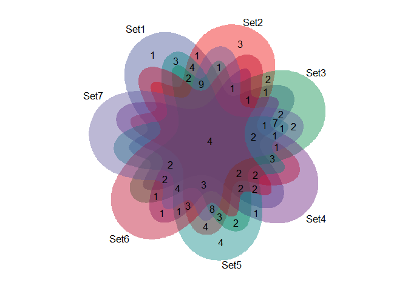
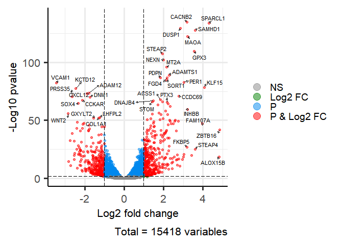
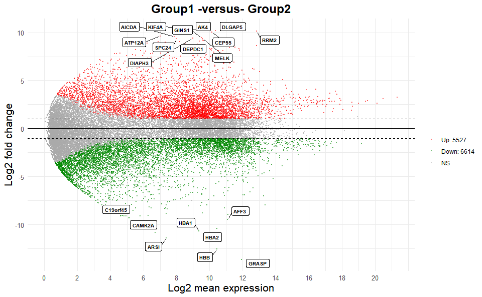
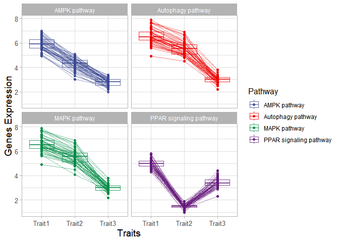
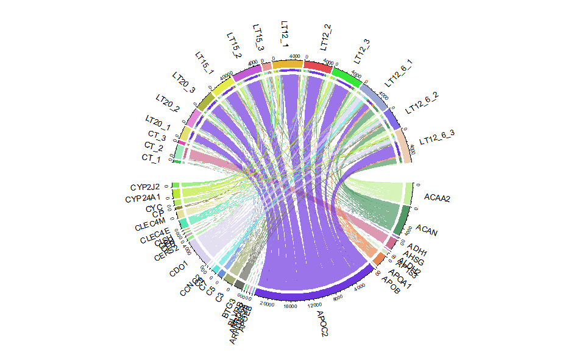

1. Introduction
TOmicsVis: TranscriptOmics Visualization.
Github: https://github.com/benben-miao/TOmicsVis/
Website: https://benben-miao.github.io/TOmicsVis/
Author: benben-miao github
BioSciTools: Biology Science Tools
3. Usage cases
3.1 Samples Statistics
3.1.1 quantile_plot
Quantile plot for visualizing data distribution.
# 1. Load box_data example datasets
data(quantile_data)
# 2. Run quantile_plot plot function
quantile_plot(
quantile_data,
my_shape = "fill_circle",
point_size = 1.5,
conf_int = TRUE,
conf_level = 0.95,
split_panel = "One_Panel",
legend_pos = "right",
legend_dir = "vertical",
sci_fill_color = "Sci_AAAS",
sci_color_alpha = 0.75,
ggTheme = "theme_light"
)
Get help using command ?TOmicsVis::quantile_plot or reference page https://benben-miao.github.io/TOmicsVis/reference/quantile_plot.html.
# Get help with command in R console.
# ?TOmicsVis::quantile_plot3.1.2 corr_heatmap
Correlation Heatmap for samples/groups based on Pearson algorithm.
# 1. Load gene_exp example dataset
data(gene_exp)
head(gene_exp)
#> M1 M2 M3 M4 M5 M6 M7 M8
#> RGL4 8.454808 8.019389 8.990836 9.718631 7.908075 4.147051 4.985084 4.576711
#> MPP7 8.690520 8.630346 7.080873 9.838476 8.271824 5.179200 5.200868 3.266993
#> UGCG 8.648366 8.600555 9.431046 7.923021 8.309214 4.902510 5.750804 4.492856
#> CYSTM1 8.628884 9.238677 8.487243 8.958537 7.357109 4.541605 6.370533 4.246651
#> ANXA2 4.983769 6.748022 6.220791 4.719403 3.284346 8.089850 10.637472 7.214912
#> ENDOD1 5.551640 5.406465 4.663785 3.550765 4.103507 8.393991 9.538503 9.069923
#> M9 M10
#> RGL4 4.930349 4.293700
#> MPP7 5.565226 4.300309
#> UGCG 4.659987 3.306275
#> CYSTM1 4.745769 3.449627
#> ANXA2 9.002710 5.123359
#> ENDOD1 8.639664 7.106392
# 2. Run corr_heatmap plot function
corr_heatmap(
gene_exp,
corr_method = "pearson",
cell_shape = "square",
fill_type = "full",
lable_size = 3,
lable_digits = 3,
color_low = "blue",
color_mid = "white",
color_high = "red",
ggTheme = "theme_light"
)
#> Scale for fill is already present.
#> Adding another scale for fill, which will replace the existing scale.
Get help using command ?TOmicsVis::corr_heatmap or reference page https://benben-miao.github.io/TOmicsVis/reference/corr_heatmap.html.
# Get help with command in R console.
# ?TOmicsVis::corr_heatmap3.1.3 pca_plot
PCA dimensional reduction visualization for RNA-Seq.
# 1. Load pca_sample_gene and pca_group_sample example datasets
data(pca_sample_gene)
data(pca_group_sample)
# 2. Run pca_plot plot function
pca_plot(
pca_sample_gene,
pca_group_sample,
point_size = 5,
text_size = 5,
ellipse_alpha = 0.3,
legend_pos = "right",
legend_dir = "vertical",
ggTheme = "theme_light"
)
Get help using command ?TOmicsVis::pca_plot or reference page https://benben-miao.github.io/TOmicsVis/reference/pca_plot.html.
# Get help with command in R console.
# ?TOmicsVis::pca_plot3.2 Traits Analysis
3.2.1 box_plot
Box plot support two levels and multiple groups with P value.
# 1. Load box_data example datasets
data(box_data)
# 2. Run box_plot plot function
box_plot(
box_data,
test_method = "wilcox.test",
test_label = "p.format",
notch = TRUE,
group_level = "Three_Column",
add_element = "dotplot",
my_shape = "fill_circle",
sci_fill_color = "Sci_AAAS",
sci_fill_alpha = 0.5,
sci_color_alpha = 1,
legend_pos = "right",
legend_dir = "vertical",
ggTheme = "theme_light"
)
#> Bin width defaults to 1/30 of the range of the data. Pick better value with
#> `binwidth`.
#> Notch went outside hinges
#> ℹ Do you want `notch = FALSE`?
#> Notch went outside hinges
#> ℹ Do you want `notch = FALSE`?
#> Notch went outside hinges
#> ℹ Do you want `notch = FALSE`?
#> Notch went outside hinges
#> ℹ Do you want `notch = FALSE`?
#> Notch went outside hinges
#> ℹ Do you want `notch = FALSE`?
#> Notch went outside hinges
#> ℹ Do you want `notch = FALSE`?
Get help using command ?TOmicsVis::box_plot or reference page https://benben-miao.github.io/TOmicsVis/reference/box_plot.html.
# Get help with command in R console.
# ?TOmicsVis::box_plot3.2.2 violin_plot
Violin plot support two levels and multiple groups with P value.
# 1. Load box_data example datasets
data(box_data)
# 2. Run violin_plot plot function
violin_plot(
box_data,
test_method = "wilcox.test",
test_label = "p.format",
group_level = "Three_Column",
violin_orientation = "vertical",
add_element = "boxplot",
element_alpha = 0.5,
my_shape = "plus_times",
sci_fill_color = "Sci_AAAS",
sci_fill_alpha = 0.5,
sci_color_alpha = 1,
legend_pos = "right",
legend_dir = "vertical",
ggTheme = "theme_light"
)
Get help using command ?TOmicsVis::violin_plot or reference page https://benben-miao.github.io/TOmicsVis/reference/violin_plot.html.
# Get help with command in R console.
# ?TOmicsVis::violin_plot3.3 Differential Expression Analyais
3.3.1 venn_plot
Venn plot for stat common and unique gene among multiple sets.
# 1. Load venn_data example datasets
data(venn_data)
# 2. Run venn_plot plot function
venn_plot(
venn_data,
line_type = "blank",
ellipse_shape = "circle",
sci_fill_color = "Sci_AAAS",
sci_fill_alpha = 0.65
)
Get help using command ?TOmicsVis::venn_plot or reference page https://benben-miao.github.io/TOmicsVis/reference/venn_plot.html.
# Get help with command in R console.
# ?TOmicsVis::venn_plot3.3.2 circos_heatmap
Circos heatmap plot for visualizing gene expressing in multiple samples.
# 1. Load circos_heatmap_data example datasets
data(circos_heatmap_data)
# 2. Run circos_heatmap plot function
circos_heatmap(
circos_heatmap_data,
low_color = "#0000ff",
mid_color = "#ffffff",
high_color = "#ff0000",
gap_size = 10,
cluster_method = "complete",
distance_method = "euclidean",
dend_height = 0.2,
rowname_size = 0.8
)
Get help using command ?TOmicsVis::circos_heatmap or reference page https://benben-miao.github.io/TOmicsVis/reference/circos_heatmap.html.
# Get help with command in R console.
# ?TOmicsVis::circos_heatmap3.3.3 volcano_plot
Volcano plot for visualizing differentailly expressed genes.
# 1. Load deg_data example datasets
data(deg_data)
# 2. Run volcano_plot plot function
volcano_plot(
deg_data,
log2fc_cutoff = 1,
pq_value = "pvalue",
pq_cutoff = 0.005,
cutoff_line = "longdash",
point_shape = "large_circle",
point_size = 1,
point_alpha = 0.5,
color_normal = "#888888",
color_log2fc = "#008000",
color_pvalue = "#0088ee",
color_Log2fc_p = "#ff0000",
label_size = 3,
boxed_labels = FALSE,
draw_connectors = FALSE,
legend_pos = "right"
)
Get help using command ?TOmicsVis::volcano_plot or reference page https://benben-miao.github.io/TOmicsVis/reference/volcano_plot.html.
# Get help with command in R console.
# ?TOmicsVis::volcano_plot3.3.4 ma_plot
MversusA plot for visualizing differentially expressed genes.
# 1. Load deg_data example datasets
data(deg_data2)
# 2. Run volcano_plot plot function
ma_plot(
deg_data2,
foldchange = 2,
fdr_value = 0.05,
point_size = 0.5,
color_up = "#FF0000",
color_down = "#008800",
color_alpha = 0.5,
top_method = "fc",
top_num = 20,
label_size = 8,
label_box = TRUE,
title = "Group1 -versus- Group2",
xlab = "Log2 mean expression",
ylab = "Log2 fold change",
ggTheme = "theme_minimal"
)
Get help using command ?TOmicsVis::ma_plot or reference page https://benben-miao.github.io/TOmicsVis/reference/ma_plot.html.
# Get help with command in R console.
# ?TOmicsVis::ma_plot3.4 Advanced Analysis
3.4.1 trend_plot
Trend plot for visualizing gene expression trend profile in multiple traits.
# 1. Load chord_data example datasets
data(trend_data)
# 2. Run trend_plot plot function
trend_plot(
trend_data,
scale_method = "globalminmax",
miss_value = "exclude",
line_alpha = 0.5,
show_points = TRUE,
show_boxplot = TRUE,
num_column = 2,
xlab = "Traits",
ylab = "Genes Expression",
sci_fill_color = "Sci_AAAS",
sci_fill_alpha = 0.8,
sci_color_alpha = 0.8,
legend_pos = "right",
legend_dir = "vertical",
ggTheme = "theme_light"
)
Get help using command ?TOmicsVis::trend_plot or reference page https://benben-miao.github.io/TOmicsVis/reference/trend_plot.html.
# Get help with command in R console.
# ?TOmicsVis::trend_plot3.5 GO and KEGG Enrichment
3.5.1 chord_plot
Chord plot for visualizing the relationships of pathways and genes. 
#> rn cn value1 value2 o1 o2 x1 x2 col
#> 1 S1 Samples.E1 4 4 5 20 61 161 #FF00007F
#> 2 S2 Samples.E1 7 7 5 19 45 157 #FF3D007F
#> 3 S3 Samples.E1 9 9 5 18 55 150 #FF7A007F
#> 4 S4 Samples.E1 14 14 5 17 55 141 #FFB8007F
#> 5 S5 Samples.E1 1 1 5 16 22 127 #FFF5007F
#> 6 S6 Samples.E1 10 10 5 15 59 126 #CCFF007F
#> 7 S7 Samples.E1 3 3 5 14 31 116 #8FFF007F
#> 8 S8 Samples.E1 15 15 5 13 52 113 #52FF007F
#> 9 S9 Samples.E1 5 5 5 12 37 98 #14FF007F
#> 10 S10 Samples.E1 7 7 5 11 27 93 #00FF297F
#> 11 S11 Samples.E1 6 6 5 10 35 86 #00FF667F
#> 12 S12 Samples.E1 11 11 5 9 49 80 #00FFA37F
#> 13 S13 Samples.E1 18 18 5 8 69 69 #00FFE07F
#> 14 S14 Samples.E1 1 1 5 7 22 51 #00E0FF7F
#> 15 S15 Samples.E1 5 5 5 6 58 50 #00A3FF7F
#> 16 S16 Samples.E1 12 12 5 5 48 45 #0066FF7F
#> 17 S17 Samples.E1 9 9 5 4 23 33 #0029FF7F
#> 18 S18 Samples.E1 5 5 5 3 50 24 #1400FF7F
#> 19 S19 Samples.E1 4 4 5 2 40 19 #5200FF7F
#> 20 S20 Samples.E1 15 15 5 1 58 15 #8F00FF7F
#> 21 S1 E2 16 16 4 20 57 166 #FF00007F
#> 22 S2 E2 11 11 4 19 38 150 #FF3D007F
#> 23 S3 E2 2 2 4 18 46 139 #FF7A007F
#> 24 S4 E2 9 9 4 17 41 137 #FFB8007F
#> 25 S5 E2 1 1 4 16 21 128 #FFF5007F
#> 26 S6 E2 18 18 4 15 49 127 #CCFF007F
#> 27 S7 E2 8 8 4 14 28 109 #8FFF007F
#> 28 S8 E2 4 4 4 13 37 101 #52FF007F
#> 29 S9 E2 4 4 4 12 32 97 #14FF007F
#> 30 S10 E2 9 9 4 11 20 93 #00FF297F
#> 31 S11 E2 7 7 4 10 29 84 #00FF667F
#> 32 S12 E2 2 2 4 9 38 77 #00FFA37F
#> 33 S13 E2 13 13 4 8 51 75 #00FFE07F
#> 34 S14 E2 2 2 4 7 21 62 #00E0FF7F
#> 35 S15 E2 13 13 4 6 53 60 #00A3FF7F
#> 36 S16 E2 7 7 4 5 36 47 #0066FF7F
#> 37 S17 E2 2 2 4 4 14 40 #0029FF7F
#> 38 S18 E2 13 13 4 3 45 38 #1400FF7F
#> 39 S19 E2 12 12 4 2 36 25 #5200FF7F
#> 40 S20 E2 13 13 4 1 43 13 #8F00FF7F
#> 41 S1 E3 12 12 3 20 41 150 #FF00007F
#> 42 S2 E3 2 2 3 19 27 138 #FF3D007F
#> 43 S3 E3 17 17 3 18 44 136 #FF7A007F
#> 44 S4 E3 12 12 3 17 32 119 #FFB8007F
#> 45 S5 E3 7 7 3 16 20 107 #FFF5007F
#> 46 S6 E3 9 9 3 15 31 100 #CCFF007F
#> 47 S7 E3 4 4 3 14 20 91 #8FFF007F
#> 48 S8 E3 9 9 3 13 33 87 #52FF007F
#> 49 S9 E3 7 7 3 12 28 78 #14FF007F
#> 50 S10 E3 1 1 3 11 11 71 #00FF297F
#> 51 S11 E3 5 5 3 10 22 70 #00FF667F
#> 52 S12 E3 2 2 3 9 36 65 #00FFA37F
#> 53 S13 E3 8 8 3 8 38 63 #00FFE07F
#> 54 S14 E3 2 2 3 7 19 55 #00E0FF7F
#> 55 S15 E3 6 6 3 6 40 53 #00A3FF7F
#> 56 S16 E3 15 15 3 5 29 47 #0066FF7F
#> 57 S17 E3 1 1 3 4 12 32 #0029FF7F
#> 58 S18 E3 13 13 3 3 32 31 #1400FF7F
#> 59 S19 E3 4 4 3 2 24 18 #5200FF7F
#> 60 S20 E3 14 14 3 1 30 14 #8F00FF7F
#> 61 S1 E4 18 18 2 20 29 227 #FF00007F
#> 62 S2 E4 15 15 2 19 25 209 #FF3D007F
#> 63 S3 E4 16 16 2 18 27 194 #FF7A007F
#> 64 S4 E4 3 3 2 17 20 178 #FFB8007F
#> 65 S5 E4 1 1 2 16 13 175 #FFF5007F
#> 66 S6 E4 13 13 2 15 22 174 #CCFF007F
#> 67 S7 E4 15 15 2 14 16 161 #8FFF007F
#> 68 S8 E4 13 13 2 13 24 146 #52FF007F
#> 69 S9 E4 3 3 2 12 21 133 #14FF007F
#> 70 S10 E4 4 4 2 11 10 130 #00FF297F
#> 71 S11 E4 8 8 2 10 17 126 #00FF667F
#> 72 S12 E4 16 16 2 9 34 118 #00FFA37F
#> 73 S13 E4 14 14 2 8 30 102 #00FFE07F
#> 74 S14 E4 14 14 2 7 17 88 #00E0FF7F
#> 75 S15 E4 16 16 2 6 34 74 #00A3FF7F
#> 76 S16 E4 12 12 2 5 14 58 #0066FF7F
#> 77 S17 E4 10 10 2 4 11 46 #0029FF7F
#> 78 S18 E4 11 11 2 3 19 36 #1400FF7F
#> 79 S19 E4 14 14 2 2 20 25 #5200FF7F
#> 80 S20 E4 11 11 2 1 16 11 #8F00FF7F
#> 81 S1 E5 11 11 1 20 11 192 #FF00007F
#> 82 S2 E5 10 10 1 19 10 181 #FF3D007F
#> 83 S3 E5 11 11 1 18 11 171 #FF7A007F
#> 84 S4 E5 17 17 1 17 17 160 #FFB8007F
#> 85 S5 E5 12 12 1 16 12 143 #FFF5007F
#> 86 S6 E5 9 9 1 15 9 131 #CCFF007F
#> 87 S7 E5 1 1 1 14 1 122 #8FFF007F
#> 88 S8 E5 11 11 1 13 11 121 #52FF007F
#> 89 S9 E5 18 18 1 12 18 110 #14FF007F
#> 90 S10 E5 6 6 1 11 6 92 #00FF297F
#> 91 S11 E5 9 9 1 10 9 86 #00FF667F
#> 92 S12 E5 18 18 1 9 18 77 #00FFA37F
#> 93 S13 E5 16 16 1 8 16 59 #00FFE07F
#> 94 S14 E5 3 3 1 7 3 43 #00E0FF7F
#> 95 S15 E5 18 18 1 6 18 40 #00A3FF7F
#> 96 S16 E5 2 2 1 5 2 22 #0066FF7F
#> 97 S17 E5 1 1 1 4 1 20 #0029FF7F
#> 98 S18 E5 8 8 1 3 8 19 #1400FF7F
#> 99 S19 E5 6 6 1 2 6 11 #5200FF7F
#> 100 S20 E5 5 5 1 1 5 5 #8F00FF7FGet help using command ?TOmicsVis::chord_plot or reference page https://benben-miao.github.io/TOmicsVis/reference/chord_plot.html.
# Get help with command in R console.
# ?TOmicsVis::chord_plot3.6 Tables Operations
3.6.1 table_split
Table split used for splitting a grouped column to multiple columns.
# 1. Load table_split_data example datasets
data(table_split_data)
head(table_split_data)
#> month day variable value
#> 1 5 1 ozone 41
#> 2 5 2 ozone 36
#> 3 5 3 ozone 12
#> 4 5 4 ozone 18
#> 5 5 5 ozone NA
#> 6 5 6 ozone 28
# 2. Run table_split plot function
res <- table_split(table_split_data,
grouped_var = "variable",
miss_drop = TRUE
)
head(res)
#> month day ozone solar.r temp wind
#> 1 5 1 41 190 67 7.4
#> 2 5 2 36 118 72 8.0
#> 3 5 3 12 149 74 12.6
#> 4 5 4 18 313 62 11.5
#> 5 5 5 NA NA 56 14.3
#> 6 5 6 28 NA 66 14.9Get help using command ?TOmicsVis::table_split or reference page https://benben-miao.github.io/TOmicsVis/reference/table_split.html.
# Get help with command in R console.
# ?TOmicsVis::table_split